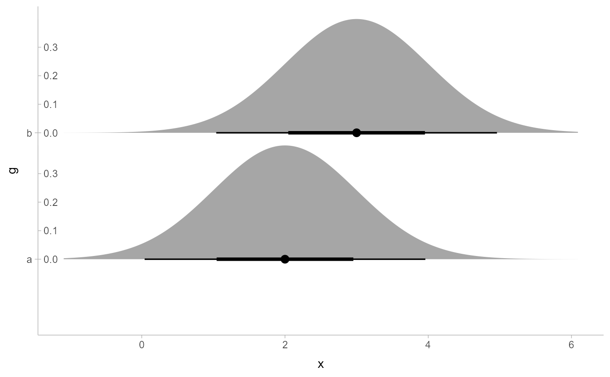
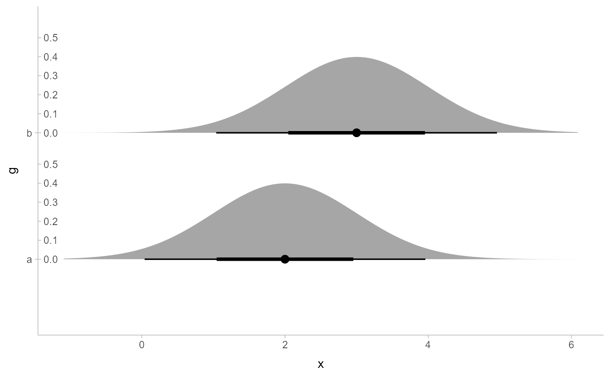

This is a sub-scale intended for adjusting the scaling of the thickness
aesthetic at a geometry (or sub-geometry) level in ggdist. It can be
used with the subscale parameter of geom_slabinterval().
Supports automatic partial function application with waived arguments.
Arguments
- x
<numeric> Vector to be rescaled. Typically provided automatically by
geom_slabinterval().- limits
<length-2 numeric | function | NULL> One of:
A numeric vector of length two providing the limits of the scale. Use
NAto use the default minimum or maximum.A function that accepts a length-2 numeric vector of the automatic limits and returns new limits. Unlike positional scales, these limits will not remove data.
NULLto use the range of the data
- expand
<numeric> Vector of limit expansion constants of length 2 or 4, following the same format used by the
expandargument ofcontinuous_scale(). The default is not to expand the limits. You can use the convenience functionexpansion()to generate the expansion values; expanding the lower limit is usually not recommended (because with mostthicknessscales the lower limit is the baseline and represents0), so a typical usage might be something likeexpand = expansion(c(0, 0.05))to expand the top end of the scale by 5%.
Value
A thickness vector of the same length as x scaled to be between
0 and 1.
Details
You can overwrite subscale_thickness in the global environment to set
the default properties of the thickness subscale. For example:
subscale_thickness = ggdist::subscale_thickness(expand = expansion(c(0, 0.05)))This will cause geom_slabinterval()s to default to a thickness subscale
that expands by 5% at the top of the scale. Always prefix such a
definition with ggdist:: to avoid infinite loops caused by recursion.
See also
The thickness datatype.
The thickness aesthetic of geom_slabinterval().
scale_thickness_shared(), for setting a thickness scale across
all geometries using the thickness aesthetic.
Other sub-scales:
subscale_identity()
Examples
library(ggplot2)
library(distributional)
df = data.frame(d = dist_normal(2:3, 1), g = c("a", "b"))
# breaks on thickness subguides are always limited to the bounds of the
# subscale, which may leave labels off near the edge of the subscale
# (e.g. here `0.4` is omitted because the max value is approx `0.39`)
ggplot(df, aes(xdist = d, y = g)) +
stat_slabinterval(
subguide = "inside"
)

# We can use the subscale to expand the upper limit of the thickness scale
# by 5% (similar to the default for positional scales), allowing bounds near
# (but just less than) the limit, like `0.4`, to be shown.
ggplot(df, aes(xdist = d, y = g)) +
stat_slabinterval(
subguide = "inside",
subscale = subscale_thickness(expand = expansion(c(0, 0.5)))
)
